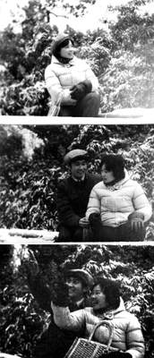
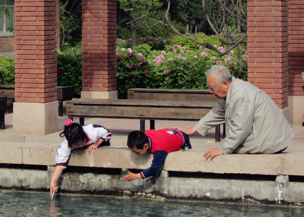
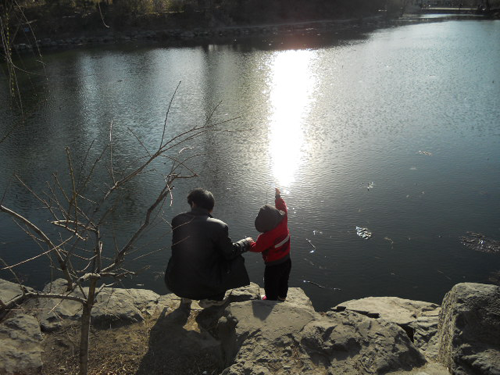
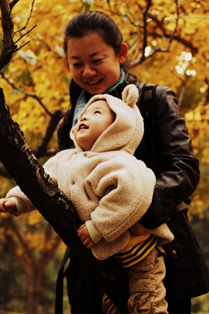
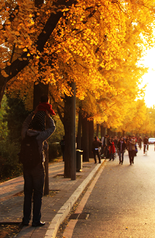
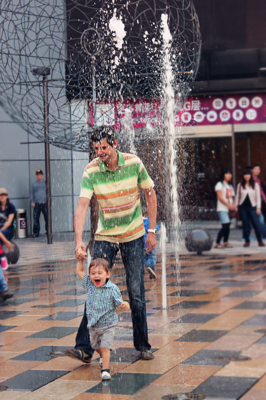
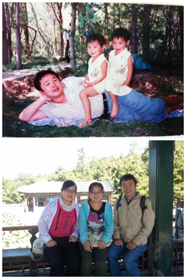
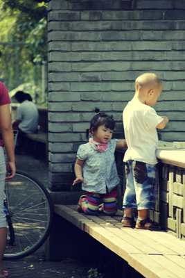
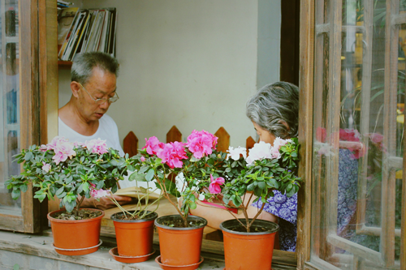

学生清华首页 |
艾视觉人人主页 |
视觉中心小站
主 页
大赛回顾
风 景
爱 情
亲 情
杂 烩
心情文字
关于我们
亲 情

美院_李沅宸_我的生命是为了见证你们的幸福

宠爱

握你的手，敢追逐光。 偶然经过近春园荷塘所见，感怀父母。

对妈妈来说，幸福就是，怀里抱着心爱的宝宝，就像拥抱了整个世界~

幸福是夕阳中那一抹金黄 是和你一起看最美的风景

他拉着他爸爸的手一次又一次的奔跑过广场上的喷泉，表情是那样的幸福与满足...

在我眼中，幸福就是和父母相伴，小时候他她牵着你的手，长大后你牵着他她的手。

两小无猜，小玩伴，小幸福，我们的小时候有没有也是一样的呢？

在南锣鼓巷看到一对老夫妻在窗前就这么面对面静坐着读书，非常祥和而幸福.
共青团清华大学委员会成才中心
copyright@2013
student.tsinghua.edu.cn
All Rights Reserved